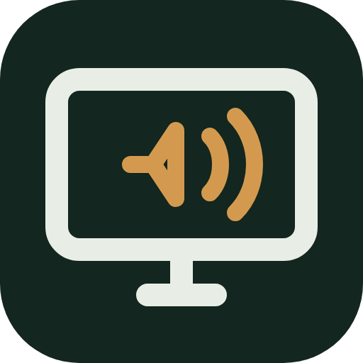

PiPortalLooking for PiPortal...
PiPortal shows this Pi's desktop with sound in any web browser, plus stats, processes, services, a terminal and files. It's a small program that has to be running first.
http://<pi-ip>:6090 and tap the speaker button for sound.No icon? Open a Terminal and type:bash ~/Desktop/"My Apps"/apps/piportal/install.sh
This page keeps checking and jumps to PiPortal as soon as it's running.